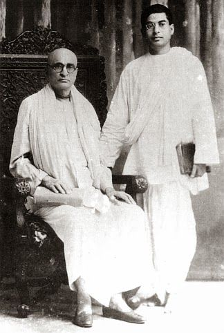
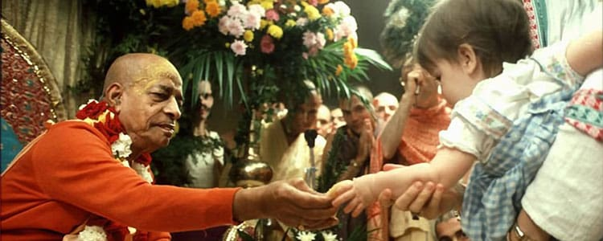
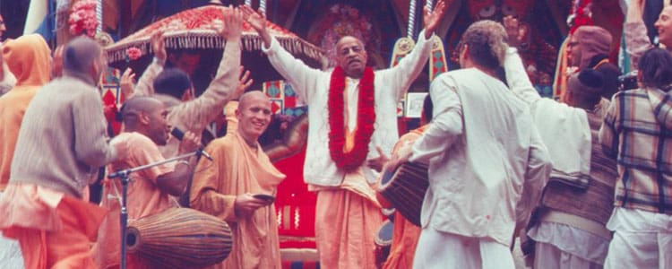

We Offer Our Humble Obeisance To

His Divine Grace
A.C. Bhaktivedanta Swami Prabhupada
Founder-Ācārya of the International Society for Krishna Consciousness
nama om vishnu-padaya krishna-preshthaya bhu-tale
srimate
bhaktivedanta-svamin iti namine
namas te sarasvate deve gaura-vani-pracarine
nirvisesha-sunyavadi-pascatya-desa-tarine
About Śrīla Prabhupāda
ISKCON is a non-profit organization that works for social welfare. He was a genuine holy person with enormous integrity and compassion, and he had a powerful impact on those who met him. He never claimed authority and respect for himself; what he said and did was always in the name of Krishna” – Dr Thomas J. Hopkins.
When His Divine Grace A.C. Bhaktivedanta Swami Śrīla Prabhupāda entered the port of New York City on September 17, 1965 few Americans took notice — but he was not merely another immigrant. He was on a mission to introduce the ancient teachings of Vedic India into mainstream America. Before Śrīla Prabhupāda passed away on November 14, 1977 at the age of 81, his mission proved successful. He had founded the International Society for Krishna Consciousness (ISKCON) and saw it grow into a worldwide confederation of more than 100 temples, ashrams and cultural centers.
Early Life
Śrīla Prabhupāda was born Abhay Charan De on September 1, 1896 to a pious Hindu family in Calcutta. As a youth growing up in British-controlled India, Abhay became involved with Mahatma Gandhi’s civil disobedience movement to secure independence for his nation. It was, however, a 1922 meeting with a prominent scholar and religious leader, Srila Bhaktisiddhanta Sarasvati, which proved most influential on Abhay’s future calling. Srila Bhaktisiddhanta was a leader in the Gaudiya Vaishnava denomination, a monotheistic tradition within the broad Hindu culture, and asked Abhay to bring the teachings of Lord Krishna to the English-speaking world. Abhay became a disciple of Srila Bhaktisiddhanta in 1933, and resolved to carry out his mentor’s request. Abhay, later known by the honorific A.C. Bhaktivedanta Swami Prabhupada, spent the next 32 years preparing for his journey west.
Expanding Boundaries
In 1965, at the age of sixty-nine, Śrīla Prabhupāda traveled to New York City aboard a cargo ship. The journey was treacherous, and the elderly spiritual teacher suffered two heart attacks aboard ship. Arriving in the United States with just seven dollars in Indian rupees and his translations of sacred Sanskrit texts, Śrīla Prabhupāda began to share the timeless wisdom of Krishna consciousness. His message of peace and goodwill resonated with many young people, some of whom came forward to become serious students of the Krishna tradition. With the help of these students, Śrīla Prabhupāda rented a small storefront on New York’s Lower East Side to use as a temple. On July 11, 1966, he officially registered his organization in the state of New York, formally founding the International Society for Krishna Consciousness.
In the eleven years that followed, Śrīla Prabhupāda circled the globe 14 times on lecture tours, bringing the teachings of Lord Krishna to thousands of people on six continents. Men and women from all backgrounds and walks of life came forward to accept his message, and with their help, Śrīla Prabhupāda established ISKCON centers and projects throughout the world. Under his inspiration, Krishna devotees established temples, rural communities, educational institutions, and started what would become the world’s largest vegetarian food relief program. With the desire to nourish the roots of Krishna consciousness in its home, Śrīla Prabhupāda returned to India several times, where he sparked a revival in the Vaishnava tradition. In India, he opened dozens of temples, including large centers in the holy towns of Vrindavan and Mayapur.
His Message to Society
Śrīla Prabhupāda’s most significant contributions, perhaps, are his books. He authored over 70 volumes on the Krishna tradition, which are highly respected by scholars for their authority, depth, fidelity to the tradition, and clarity. Several of his works are used as textbooks in numerous college courses. His writings have been translated into 76 languages. His most prominent works include: Bhagavad-gita As It Is, the 30-volume Srimad-Bhagavatam, and the 17-volume Sri Caitanya-caritamrita.
Prabhupada’s teachings emphasized:
His Achievements
Srila Prabhupada came back to India with a wish to cultivate the better roots of Lord Krishna. He opened numerous temples and one of the largest centers of ISKCON in the holy towns of Mayapur and Vrindavana. The most imperative contribution of Srila Prabhupada is conceivably his books. He wrote more than 70 volumes on the tradition of Krishna, which Scholars highly appreciate because of its depth, clarity, and faithfulness toward the tradition. Several colleges have used his work in textbooks, and all his books have been already translated into 76 different languages.
His lifetime achievements are innumerable, magnificent, and extraordinary. Some of his achievements are listed below: